Bienvenido a Nuestro Servicio de Venta y Reparación
Ofrecemos los mejores productos y servicios para tu celular.
Cargdores
En nuestro local de celulares, ofrecemos una amplia variedad de cargadores para satisfacer todas tus necesidades de carga. Entendemos la importancia de mantener tus dispositivos móviles siempre cargados y listos para usar, por lo que hemos seleccionado cuidadosamente una gama de cargadores de alta calidad, compatibles con diferentes tipos de dispositivos y estilos de vida.
Cargadores de Pared
Nuestros cargadores de pared son ideales para cargar tus dispositivos en casa o en la oficina. Disponemos de cargadores de pared con diferentes especificaciones, incluyendo:
- Cargadores Rápidos: Equipados con tecnología Quick Charge y Power Delivery (PD) para una carga más rápida y eficiente.
- Cargadores Multi-puerto: Con múltiples puertos USB para cargar varios dispositivos simultáneamente.
- Cargadores Compactos: De tamaño reducido para mayor portabilidad, perfectos para llevar en tu bolso o maletín.
Cargadores Inalámbricos
Para aquellos que prefieren una solución sin cables, ofrecemos una variedad de cargadores inalámbricos. Estos cargadores son compatibles con dispositivos que soportan la tecnología Qi y vienen en varios diseños:
- Bases de Carga: Ideales para colocar en tu escritorio o mesita de noche, permitiendo cargar tu dispositivo simplemente colocándolo sobre la base.
- Cargadores de Coche Inalámbricos: Permiten cargar tu dispositivo mientras conduces, asegurando que siempre tengas batería durante tus viajes.
- Cargadores Inalámbricos Rápidos: Ofrecen una carga más veloz para dispositivos compatibles con carga rápida inalámbrica.
Cargadores de Coche
Nuestros cargadores de coche son perfectos para mantener tus dispositivos cargados mientras estás en movimiento. Disponemos de:
- Cargadores de Coche USB: Con uno o más puertos USB para cargar varios dispositivos al mismo tiempo.
- Cargadores de Coche con Cable Incorporado: Diseñados específicamente para ciertos tipos de dispositivos, eliminando la necesidad de llevar cables adicionales.
- Cargadores de Coche Rápidos: Equipados con tecnología de carga rápida para una recarga eficiente mientras conduces.
Cargadores Portátiles (Power Banks)
Para aquellos que necesitan cargar sus dispositivos sobre la marcha, nuestros cargadores portátiles (power banks) son la solución perfecta. Disponemos de power banks con diferentes capacidades y características:
- Power Banks de Alta Capacidad: Para cargar varios dispositivos múltiples veces.
- Power Banks Compactos: Fácilmente transportables y perfectos para uso diario.
- Power Banks con Carga Rápida: Equipados con Quick Charge y Power Delivery para una carga más rápida y eficiente.
- Power Banks Solares: Ideales para actividades al aire libre, aprovechando la energía solar para recargar tus dispositivos.
Cargadores Universales
Nuestros cargadores universales son compatibles con una amplia gama de dispositivos, incluidos teléfonos, tabletas, portátiles y más. Estos cargadores son ideales para familias o personas con múltiples dispositivos de diferentes marcas.
Visítanos en nuestro local para explorar nuestra amplia gama de cargadores. Nuestro personal experto está siempre disponible para ayudarte a elegir el cargador que mejor se adapte a tus necesidades y asegurar que tus dispositivos estén siempre cargados y listos para usar.
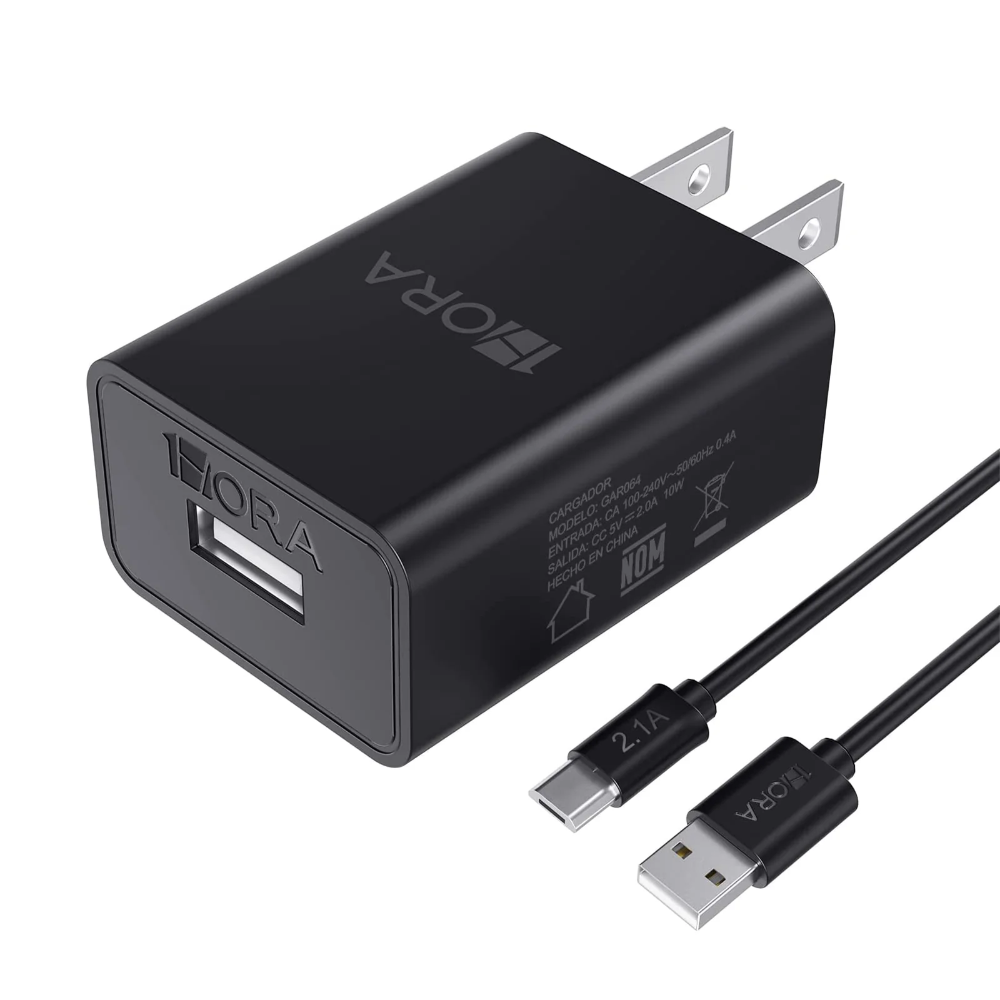
Cargador entrada V8: $120
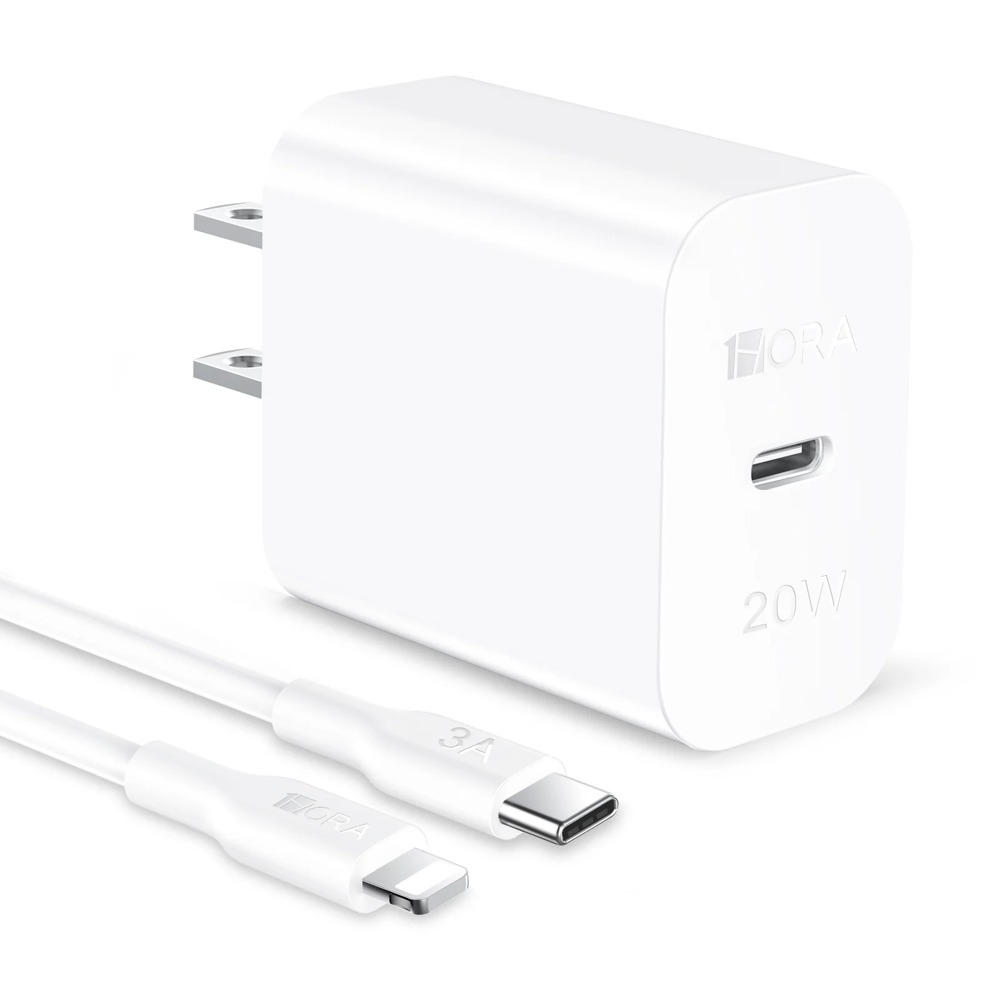
Cargador tipo C a C: $250
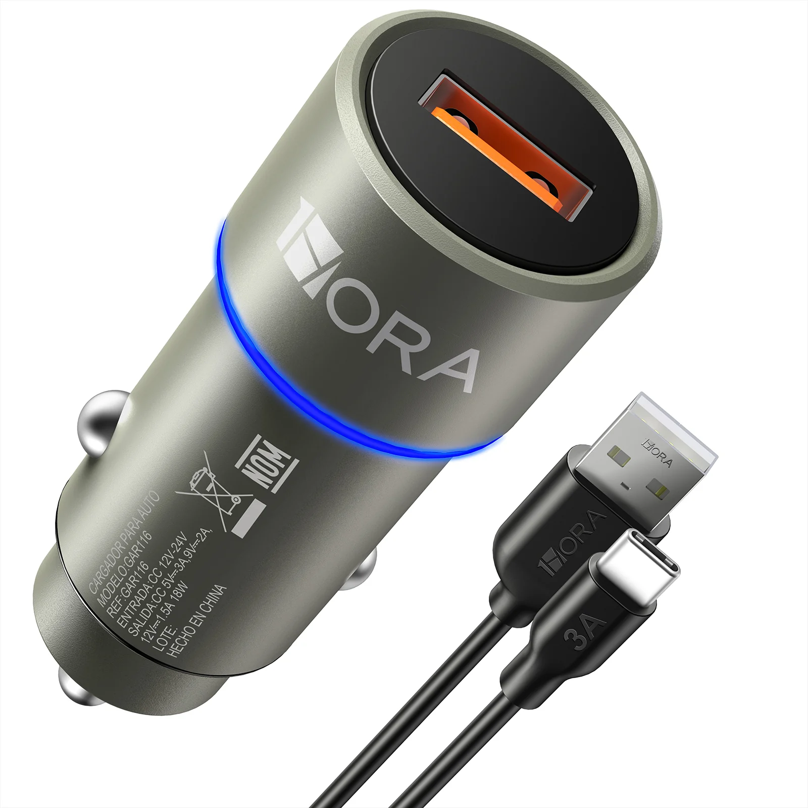
Cargador para coche: $100
Audifonos
En nuestro local de celulares, ofrecemos una amplia gama de audífonos para satisfacer todos los gustos y necesidades. Entendemos que los audífonos no solo proporcionan una excelente calidad de sonido, sino que también reflejan tu estilo personal y preferencias de uso. Por eso, hemos seleccionado una colección diversa y de alta calidad para ti.
Audífonos In-Ear
Los audífonos in-ear son compactos y fáciles de llevar, proporcionando un ajuste cómodo y una excelente calidad de sonido. Disponemos de modelos con y sin cables, incluyendo opciones con cancelación de ruido para una experiencia auditiva inmersiva.
Audífonos Over-Ear
Para aquellos que buscan una experiencia de audio más envolvente, nuestros audífonos over-ear son la elección perfecta. Estos audífonos cubren completamente las orejas, ofreciendo un sonido rico y profundo, además de una excelente cancelación de ruido. Son ideales para largas sesiones de escucha.
Audífonos On-Ear
Los audífonos on-ear se apoyan sobre las orejas, proporcionando una buena calidad de sonido en un diseño más compacto que los modelos over-ear. Son perfectos para quienes desean un equilibrio entre portabilidad y calidad de audio.
Audífonos Deportivos
Nuestros audífonos deportivos están diseñados para resistir el sudor y el movimiento, proporcionando un ajuste seguro durante el ejercicio. Disponemos de modelos con resistencia al agua y opciones inalámbricas para mayor libertad de movimiento.
Audífonos Bluetooth
La comodidad de los audífonos Bluetooth es inigualable, eliminando la necesidad de cables y permitiendo una mayor libertad de movimiento. Disponemos de una variedad de modelos, desde in-ear hasta over-ear, con diferentes características como controles táctiles y micrófonos integrados para llamadas manos libres.
Audífonos con Cancelación de Ruido
Para aquellos que desean una experiencia auditiva sin distracciones, nuestros audífonos con cancelación de ruido son ideales. Disponemos de modelos que utilizan tecnología avanzada para reducir el ruido ambiental, permitiéndote disfrutar de tu música o podcasts en paz.
Audífonos Gaming
Para los entusiastas de los videojuegos, ofrecemos audífonos gaming diseñados para proporcionar una experiencia de sonido inmersiva. Estos audífonos cuentan con micrófonos de alta calidad para comunicación clara con otros jugadores y son compatibles con múltiples plataformas.
Audífonos de Alta Fidelidad
Los audiófilos apreciarán nuestra selección de audífonos de alta fidelidad, diseñados para ofrecer un sonido preciso y detallado. Disponemos de modelos con componentes de alta calidad que reproducen el audio tal como fue grabado, ideal para escuchar música con la máxima calidad.
Audífonos Económicos
También ofrecemos una gama de audífonos económicos que no comprometen la calidad. Estos modelos son ideales para aquellos que buscan una solución asequible sin renunciar a una buena experiencia de audio.
Visítanos en nuestro local para explorar nuestra amplia colección de audífonos. Nuestro personal experto está siempre disponible para ayudarte a elegir los audífonos que mejor se adapten a tus necesidades y preferencias auditivas. Estamos seguros de que encontrarás el par perfecto para ti.
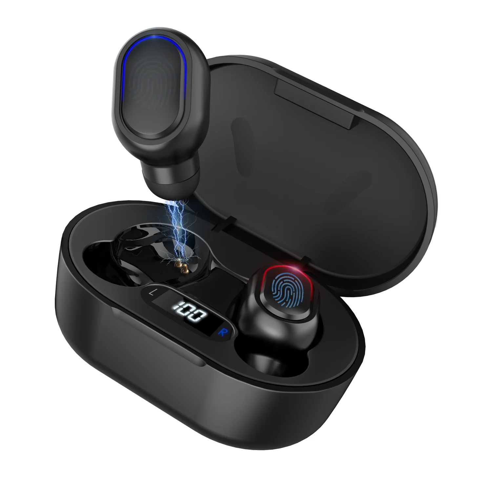
Audifonos Bluetooth: $350
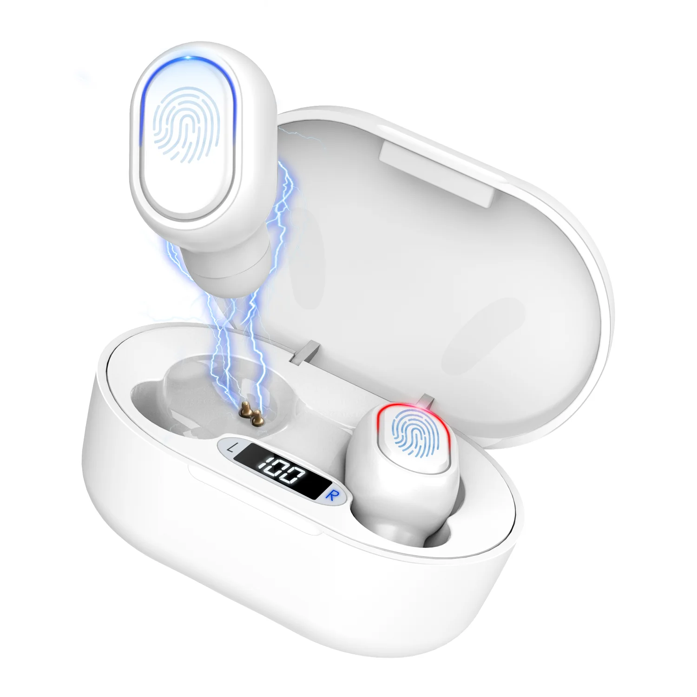
Audifonos Bluetooth: $350
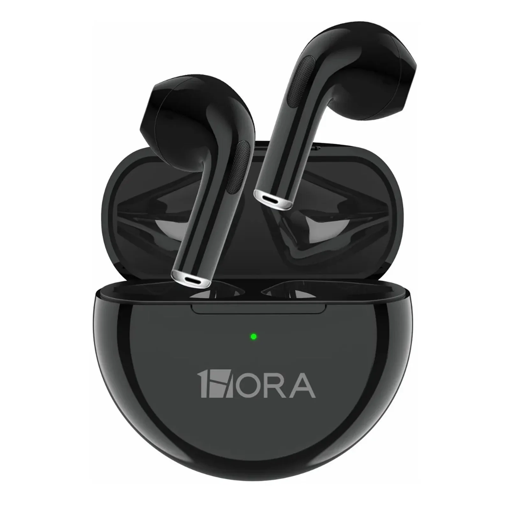
Audifonos Bluetooth: $300
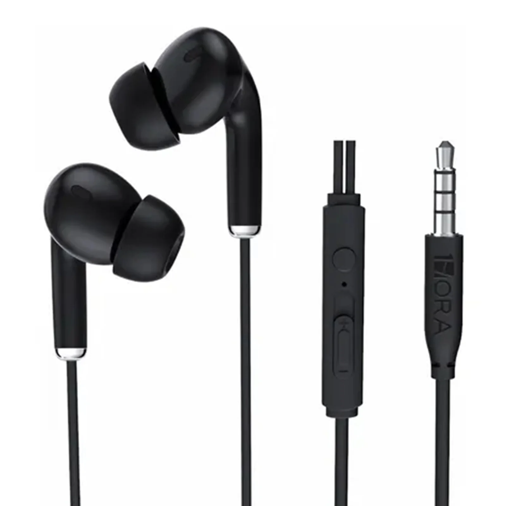
Audifonos de cable: $75
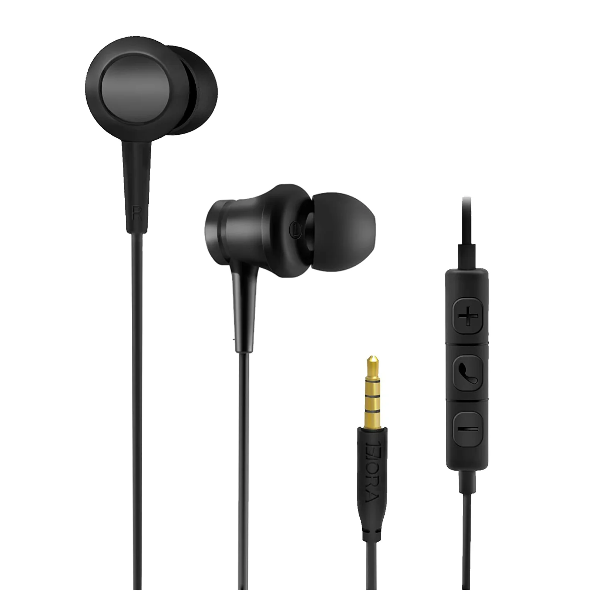
Audifonos de cable: $75
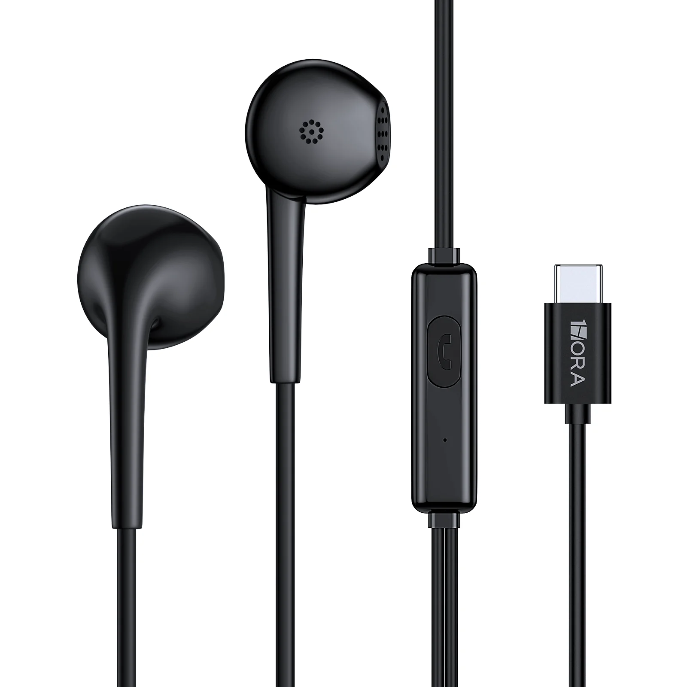
Audifonos entrada tipo C: $100
Fundas
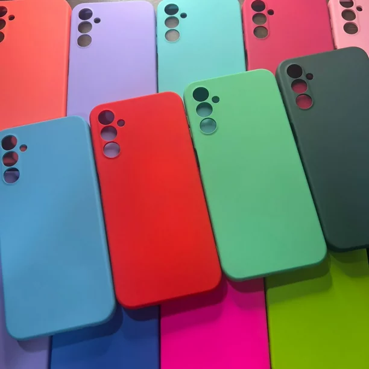
En nuestro local de celulares, ofrecemos una amplia variedad de fundas para satisfacer todos los gustos y necesidades. Entendemos que las fundas no solo protegen tu dispositivo, sino que también reflejan tu estilo personal, por eso hemos seleccionado cuidadosamente una colección diversa y de alta calidad.
Fundas de Silicona
Las fundas de silicona son una opción popular por su flexibilidad y capacidad de absorción de impactos. Disponibles en una amplia gama de colores, desde tonos neutros hasta los más vibrantes, estas fundas proporcionan una excelente protección contra caídas y arañazos, además de un agarre cómodo y antideslizante.
Fundas Rígidas
Para aquellos que buscan una protección más robusta, nuestras fundas rígidas son ideales. Hechas de policarbonato resistente, estas fundas ofrecen una defensa excepcional contra golpes y caídas fuertes. Vienen en diseños elegantes y minimalistas, así como en patrones llamativos para quienes desean destacar.
Fundas de Cuero
Si prefieres un toque de elegancia y sofisticación, nuestras fundas de cuero son la elección perfecta. Disponibles en cuero genuino y cuero sintético de alta calidad, estas fundas combinan estilo y funcionalidad. Ofrecen un aspecto profesional y son ideales para quienes desean una apariencia más clásica y distinguida.
Fundas con Batería Integrada
Para aquellos que siempre están en movimiento, las fundas con batería integrada son una solución conveniente. Estas fundas no solo protegen tu celular, sino que también extienden su vida útil con una batería adicional incorporada. Son perfectas para viajes largos o días ocupados cuando necesitas un impulso extra de energía.
Fundas Transparentes
Las fundas transparentes son ideales para quienes desean mantener el diseño original de su celular visible mientras lo protegen. Fabricadas con materiales de alta calidad como TPU y policarbonato, estas fundas ofrecen una protección efectiva sin comprometer el estilo del dispositivo.
Fundas Antigolpes
Para aquellos que necesitan la máxima protección, nuestras fundas antigolpes están diseñadas para soportar las condiciones más duras. Equipadas con bordes reforzados y materiales de absorción de impacto, estas fundas aseguran que tu celular esté a salvo incluso en los entornos más exigentes.
Fundas con Soporte
Si sueles ver videos o realizar videollamadas frecuentemente, nuestras fundas con soporte incorporado son extremadamente útiles. Estas fundas permiten mantener tu celular en una posición cómoda sin necesidad de sujetarlo, proporcionando una experiencia de manos libres.
Fundas Cartera
Las fundas cartera combinan la protección del celular con la funcionalidad de una billetera. Con espacio para tarjetas, dinero y tu identificación, estas fundas son ideales para quienes desean reducir la cantidad de objetos que llevan consigo, manteniendo todo en un solo lugar.
Visítanos en nuestro local para explorar nuestra extensa colección de fundas para celulares. Estamos seguros de que encontrarás la funda perfecta que se ajuste a tu estilo y necesidades. Nuestro personal estará encantado de ayudarte a elegir la mejor opción para ti.
Micas
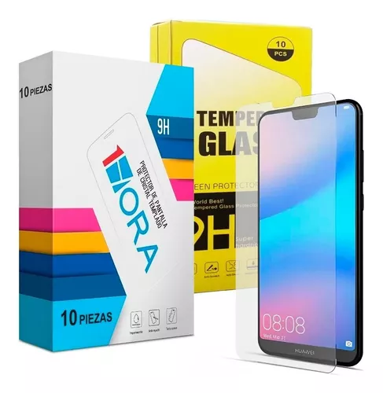
En nuestro local de celulares, ofrecemos una gran variedad de micas para proteger la pantalla de tu dispositivo. Sabemos que mantener la pantalla en perfectas condiciones es crucial para prolongar la vida útil de tu celular y asegurar una experiencia de usuario óptima. Por ello, hemos seleccionado una amplia gama de micas que se adaptan a diferentes necesidades y preferencias.
Micas de Vidrio Templado
Las micas de vidrio templado son una de las opciones más populares por su durabilidad y resistencia. Estas micas están diseñadas para soportar impactos fuertes y proteger tu pantalla contra arañazos profundos. Además, mantienen la claridad y la sensibilidad táctil de la pantalla original, asegurando una experiencia de uso ininterrumpida.
Micas de Hidrogel
Para aquellos que buscan una protección más flexible, las micas de hidrogel son una excelente elección. Estas micas se adaptan perfectamente a las curvas de tu pantalla, ofreciendo una protección completa. Son especialmente útiles para dispositivos con pantallas curvas o bordes redondeados. Además, son autorreparables, lo que significa que pequeños arañazos desaparecen con el tiempo.
Micas Antirreflejo
Las micas antirreflejo están diseñadas para mejorar la visibilidad de la pantalla bajo la luz solar directa. Estas micas reducen el deslumbramiento y la reflexión, lo que facilita el uso del celular en exteriores. Son ideales para aquellos que pasan mucho tiempo al aire libre y necesitan una pantalla visible en cualquier condición de luz.
Micas Privativas
Para aquellos que valoran su privacidad, las micas privativas son la solución perfecta. Estas micas restringen el ángulo de visión de la pantalla, de modo que solo la persona que está directamente frente a ella puede ver el contenido. Son ideales para proteger información sensible y evitar miradas indiscretas en lugares públicos.
Micas Mate
Las micas mate ofrecen una experiencia sin reflejos y una sensación táctil diferente, similar a la del papel. Estas micas son ideales para usuarios que prefieren un acabado mate y desean reducir las huellas dactilares en la pantalla. También pueden mejorar la precisión al escribir o dibujar con un lápiz óptico.
Micas para Juegos
Para los entusiastas de los juegos móviles, ofrecemos micas especialmente diseñadas para mejorar la experiencia de juego. Estas micas tienen una superficie ultraliscia que reduce la fricción y permite movimientos rápidos y precisos. Además, mantienen la alta sensibilidad táctil, crucial para un rendimiento óptimo en los juegos.
Micas Protectoras Full Cover
Las micas protectoras full cover están diseñadas para cubrir toda la pantalla, incluidos los bordes. Estas micas ofrecen una protección integral, asegurando que incluso los bordes de tu dispositivo estén a salvo de daños. Son perfectas para dispositivos con pantallas grandes y curvas.
Visítanos en nuestro local para explorar nuestra extensa colección de micas protectoras. Nuestro equipo estará encantado de ayudarte a elegir la mica perfecta que se ajuste a tu dispositivo y a tus necesidades. Con nuestra variedad de opciones, estamos seguros de que encontrarás la protección ideal para mantener tu pantalla impecable.
Cables
En nuestro local de celulares, ofrecemos una amplia gama de cables para asegurar que siempre tengas la conexión adecuada para tus dispositivos. Entendemos la importancia de contar con cables de alta calidad que ofrezcan durabilidad y rendimiento, por lo que hemos seleccionado cuidadosamente una colección diversa para satisfacer todas tus necesidades.
Cables USB-C
Los cables USB-C son el estándar moderno para muchos dispositivos. Ofrecemos cables USB-C de diversas longitudes y características, incluyendo:
- Cables USB-C a USB-C: Ideales para cargar y transferir datos entre dispositivos USB-C.
- Cables USB-C a USB-A: Compatibles con dispositivos y cargadores más antiguos que utilizan puertos USB-A.
- Cables USB-C con Carga Rápida: Soportan tecnologías como Power Delivery (PD) para una carga más rápida y eficiente.
Cables Micro-USB
Para dispositivos más antiguos, disponemos de una variedad de cables micro-USB. Estos cables son perfectos para cargar y transferir datos en dispositivos que aún utilizan este conector estándar. Ofrecemos cables micro-USB en diferentes longitudes y colores para adaptarse a tus preferencias.
Cables Lightning
Para usuarios de dispositivos Apple, ofrecemos cables Lightning de alta calidad. Estos cables son compatibles con iPhones, iPads y otros dispositivos Apple. Disponemos de:
- Cables Lightning a USB-A: Para cargar y sincronizar con cargadores y computadoras más antiguos.
- Cables Lightning a USB-C: Para cargar rápidamente con cargadores modernos y transferir datos a alta velocidad.
Cables Multi-funcionales
Para aquellos que necesitan máxima versatilidad, ofrecemos cables multi-funcionales con conectores intercambiables. Estos cables pueden tener combinaciones de USB-C, micro-USB y Lightning, permitiéndote cargar y transferir datos en una amplia gama de dispositivos con un solo cable.
Cables HDMI
Además de cables para cargar y sincronizar, también ofrecemos cables HDMI de alta calidad para tus necesidades de video. Disponemos de cables HDMI de diferentes longitudes, compatibles con televisores, monitores y otros dispositivos de visualización, incluyendo:
- Cables HDMI 2.0: Soportan resoluciones de hasta 4K a 60Hz para una excelente calidad de imagen.
- Cables HDMI 2.1: Soportan resoluciones de hasta 8K y tasas de refresco más altas, ideales para la tecnología más avanzada.
Cables Auxiliares
Para tus necesidades de audio, ofrecemos cables auxiliares (AUX) que permiten conectar dispositivos de audio a altavoces, auriculares y otros equipos de sonido. Disponemos de cables AUX en varias longitudes y con conectores de 3.5 mm estándar.
Cables de Carga Magnéticos
Para mayor conveniencia, ofrecemos cables de carga magnéticos. Estos cables tienen un conector magnético que facilita la conexión y desconexión, reduciendo el desgaste en los puertos de tus dispositivos. Son ideales para quienes buscan una solución práctica y duradera.
Visítanos en nuestro local para explorar nuestra amplia gama de cables. Nuestro personal experto está siempre disponible para ayudarte a elegir el cable que mejor se adapte a tus necesidades, asegurando que siempre tengas la conexión adecuada para tus dispositivos.
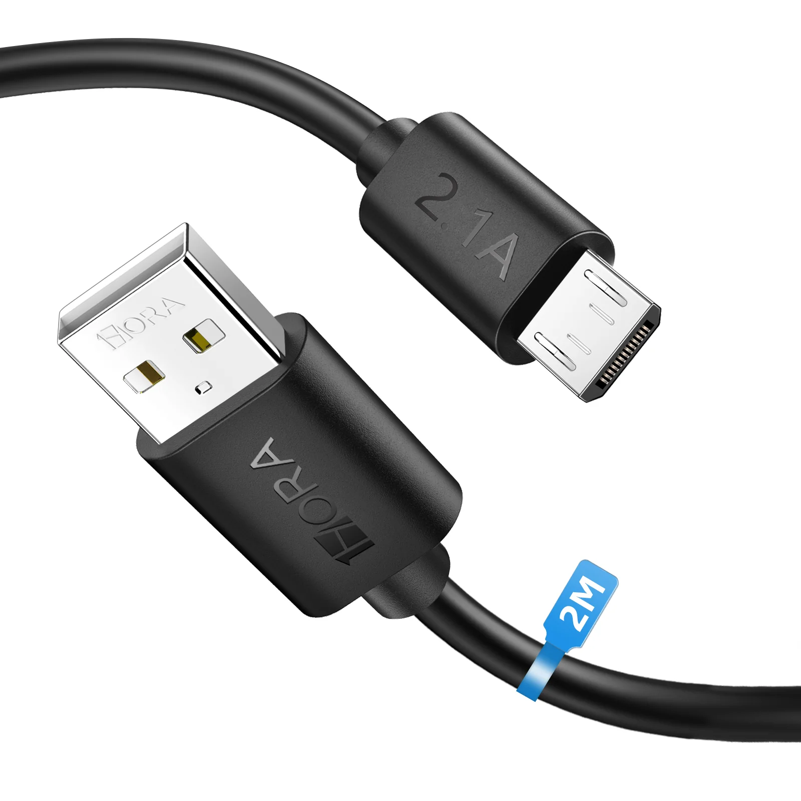
Cable tipo V8: $50
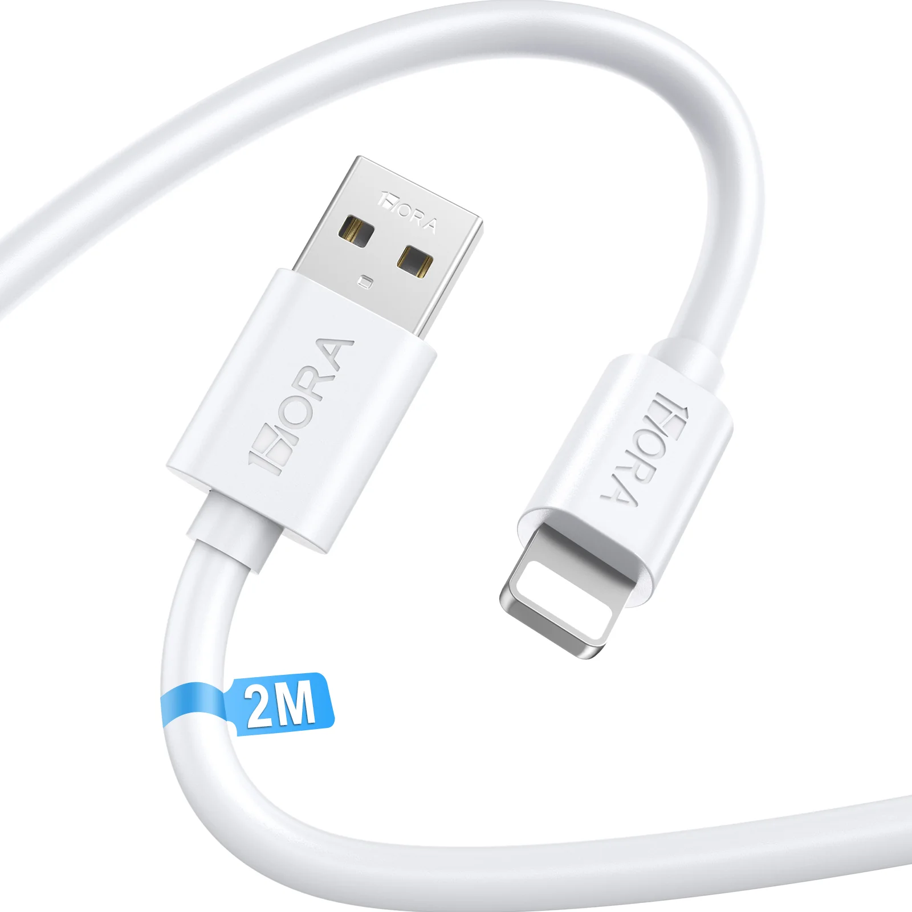
Cable tipo Lightning: $80
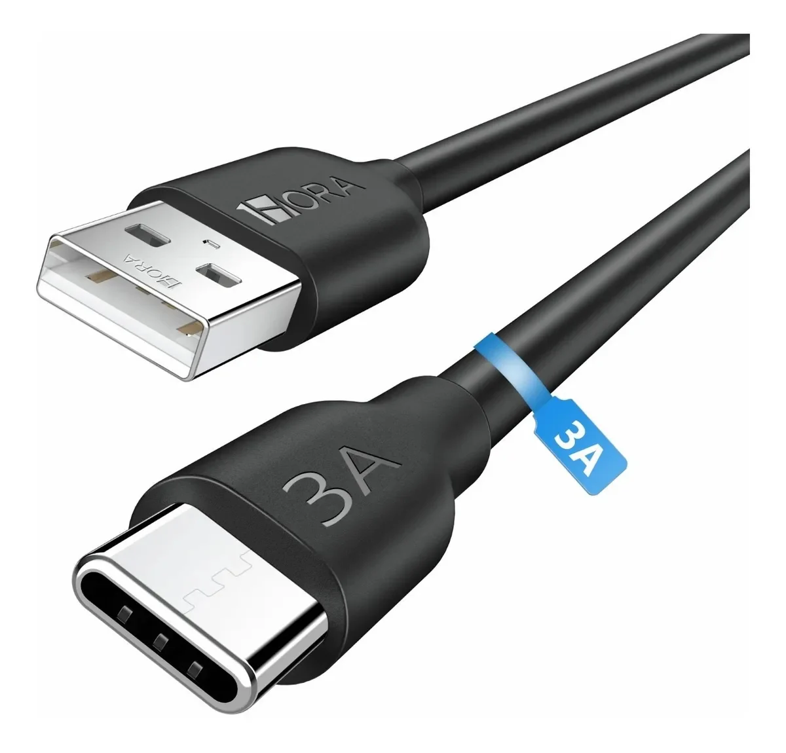
Cable tipo C: $60
Memorias de almacenamiento
En nuestro local de celulares, entendemos la importancia de tener suficiente espacio de almacenamiento para tus archivos, fotos, videos y aplicaciones. Por eso, ofrecemos una amplia variedad de memorias de almacenamiento que se adaptan a tus necesidades. Aquí te presentamos nuestras opciones destacadas:
Tarjetas MicroSD
Las tarjetas MicroSD son una de las formas más populares de expandir el almacenamiento de tu dispositivo móvil. Disponemos de tarjetas MicroSD de diferentes capacidades, desde 16 GB hasta 1 TB, para satisfacer diversas necesidades de almacenamiento. Estas tarjetas son compatibles con la mayoría de los teléfonos inteligentes, cámaras y otros dispositivos electrónicos. Además, ofrecemos tarjetas MicroSD de alta velocidad, ideales para grabación de video en alta definición y fotografía de alta resolución.
Unidades Flash USB
Para aquellos que prefieren una solución de almacenamiento portátil, nuestras unidades flash USB son perfectas. Disponemos de unidades flash USB en una variedad de capacidades y diseños, desde los más compactos hasta los más robustos y resistentes. Estas unidades son ideales para transferir y almacenar datos rápidamente entre dispositivos. También ofrecemos unidades USB con conectores duales (USB-A y USB-C) para mayor compatibilidad con una amplia gama de dispositivos.
Memorias OTG (On-The-Go)
Las memorias OTG son perfectas para quienes necesitan transferir archivos entre dispositivos móviles y computadoras sin necesidad de un cable. Estas unidades combinan la funcionalidad de un USB con un conector micro-USB o USB-C, permitiendo una fácil transferencia de datos. Son ideales para usuarios que necesitan mover archivos rápidamente entre su teléfono y otros dispositivos.
Asesoría Personalizada
Entendemos que cada usuario tiene necesidades específicas de almacenamiento, por lo que nuestro equipo está disponible para ofrecer asesoría personalizada. Te ayudaremos a encontrar la mejor solución de almacenamiento según tus requerimientos de capacidad, velocidad y presupuesto.
Visítanos en nuestro local para explorar nuestra extensa gama de memorias de almacenamiento. Estamos comprometidos a proporcionarte las mejores opciones para que nunca te falte espacio para tus archivos importantes. Nuestro personal experto está siempre dispuesto a ayudarte a elegir la solución de almacenamiento perfecta para ti.

Memorias SD
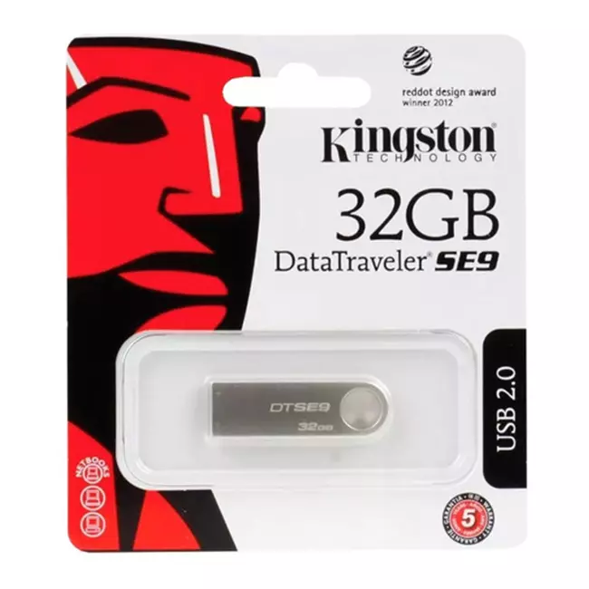
Memorias USB
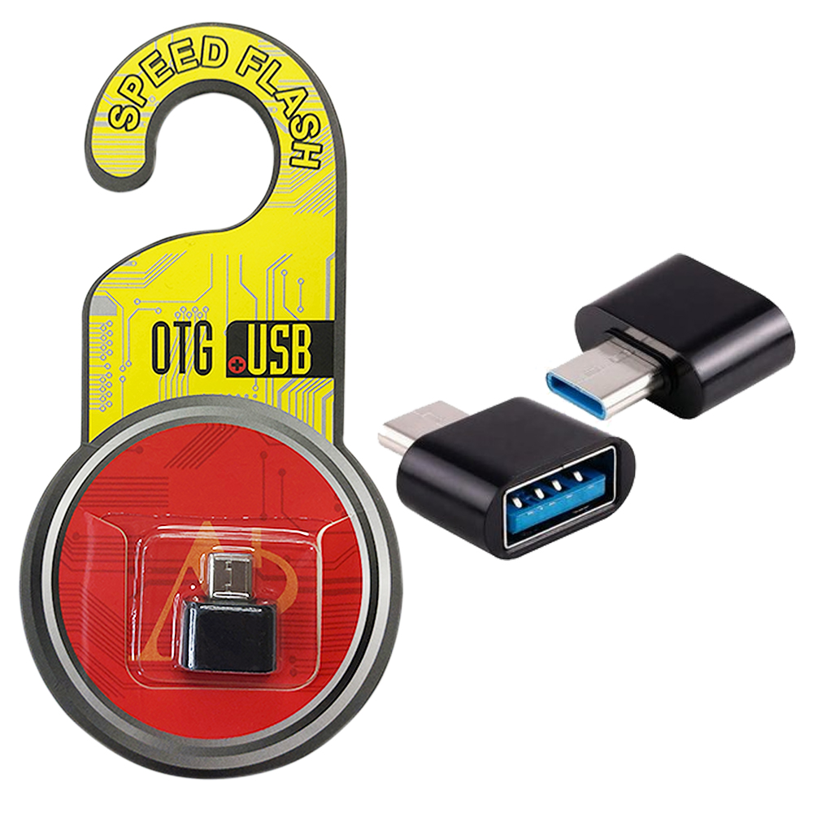
Memorias OTG
Si tienes alguna pregunta adicional o necesitas más información, no dudes en contactarnos. ¡Estamos aquí para ayudarte!